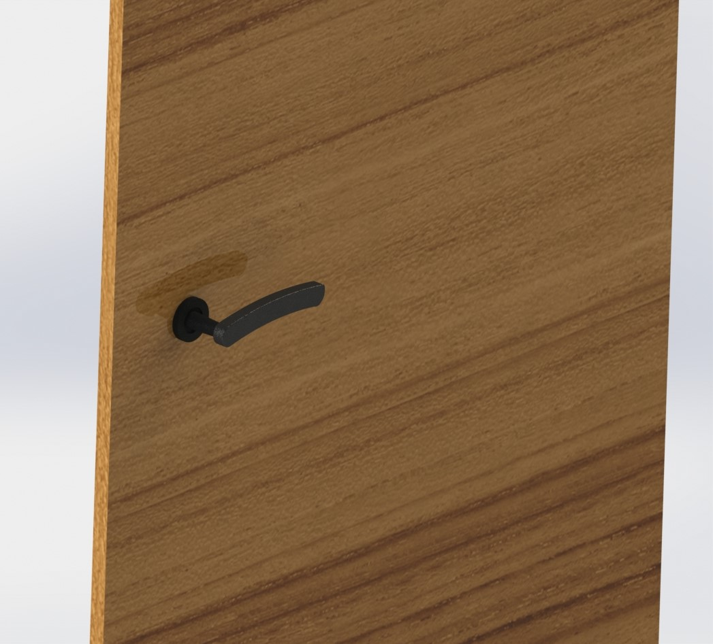
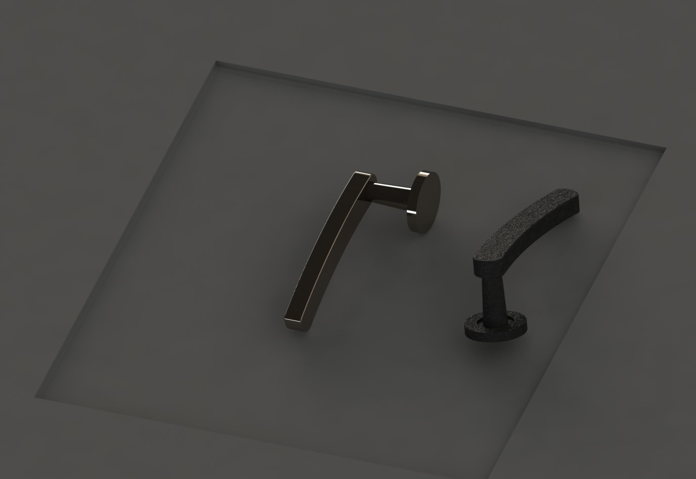
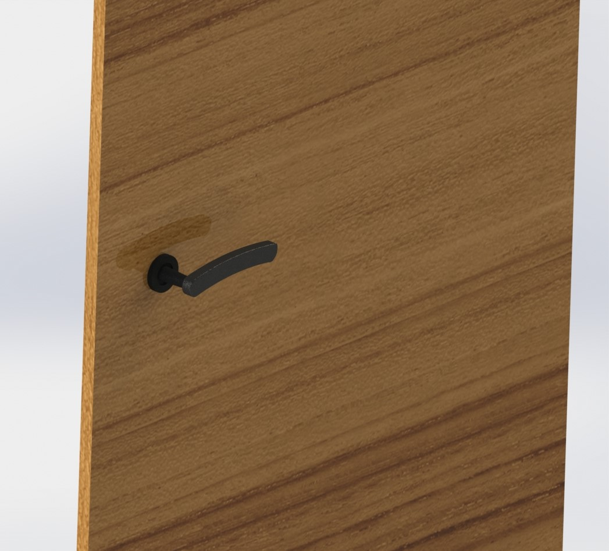
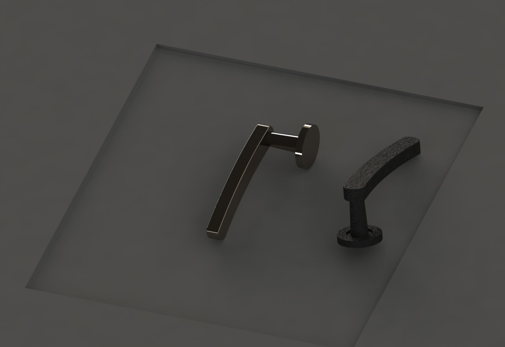

Projects

Design and Fabrication Acoustic Metamaterial for Noise Reduction
| COMSOL | Final Year Project
I remember we were contemplating finding a problem to solve with an engineering solution for our final year project. We noticed that the grass cutter was very noisy around the campus, especially when I needed natural ventilation and the machine was operating outside. So, we decided to address this issue as our final year project. While researching online, we came across a recent innovation in noise reduction—acoustic metamaterials. This technology can be described as a method to cancel or reduce sound without blocking ventilation, based on fundamental wave physics. The project involved data collection, design, creating a parametric CAD model, performing pressure acoustics simulations in COMSOL Multiphysics, parametric optimization, experimental setup development, 3D printing of the optimized model, and testing the acoustic metamaterial (AMM) prototypes. This project was supported by Department of Environment, Ministry of Forest and Environment, Government of Nepal.
Here is the brief pictorial representation of our project.
We successfully achieved sound attenuation of up to 18 dB from a grass cutter while maintaining a 52.7% openness ratio. This technology holds significant potential for future applications. Acoustic metamaterial (AMM) panels can be used as sound-reducing windows, and they can also be employed to enclose noisy industrial machines, such as motors, to minimize noise pollution.
CFD Analysis of Cavitation in Centrifugal Pump
| Ansys CFX | SolidWorks
Cavitation is a tricky problem in the way fluids flow, especially in machines called centrifugal pumps. It can cause harmful effects on how these pumps work and their physical parts. This study used computer simulations to understand cavitation better in these pumps. We looked closely at how cavitation forms inside the pump, and how it affects things like how the fluid moves, where pressures change, and how well the pump works. By studying how fluid moves and cavitation happens, we learned how it makes pumps less efficient and reliable. This helps us figure out ways to make pumps work better and last longer.Through meticulous simulations, we revealed a consistent trend: cavitation increases with an increase in RPM, mass flow rate, and suction pressure.
Please find the project report for more details.


Voice Biometric Authentication using Python
| Hackathon Project | ML & Sound Analysis
This project focuses on developing a Voice biometric authentication system using Python, aiming to provide a secure, contactless, and user-friendly alternative to traditional authentication methods like passwords and PINs. Leveraging the unique vocal characteristics of individuals, the system captures and analyzes voice samples using techniques such as **Mel-Frequency Cepstral Coefficients (MFCCs) and **machine learning models like Deep Neural Networks (DNNs) for accurate speaker recognition. The project addresses key challenges such as background noise, voice variability, and real-time usability by applying robust preprocessing, model training, and validation techniques. We were able to obtain more than 80% accuracy in recognizing the speakers in record. In this project, we used the knowledge of python learned at Intensive Python Programming Workshop which was organised by Samsung under the program Samsung Innovation Campus(SIC). We also used chatgpt to learn the concept of different sound analysis and machine learning libraries like librosa and scikit for this project.
Please find the attached slides for detailed information.

Assistive Devices
| ADB Makeathon | Gripper Cane
her need of assistive devices
CAD Works
| SolidWorks| 3D Model
Here is the collection of some of my CAD model during learning phase of SolidWorks.
 



Development of Portfolio website
| HTML | CSS